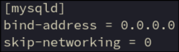

Configure the mariadb server daemon
Will accept connections from any ip
No ports exposed to external network so only other members of the docker network can connect
Allow tcp/ip connections rather than limit to local unix socket connections
Could not connect over docker network otherwise